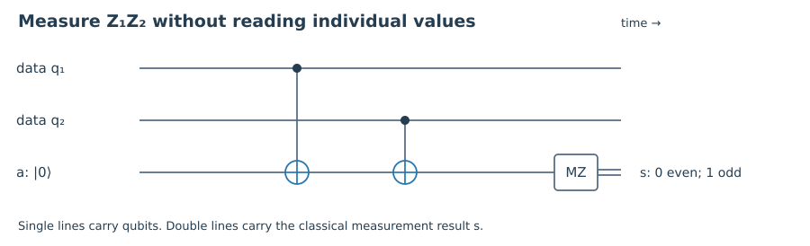
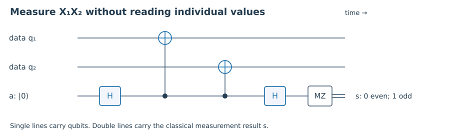
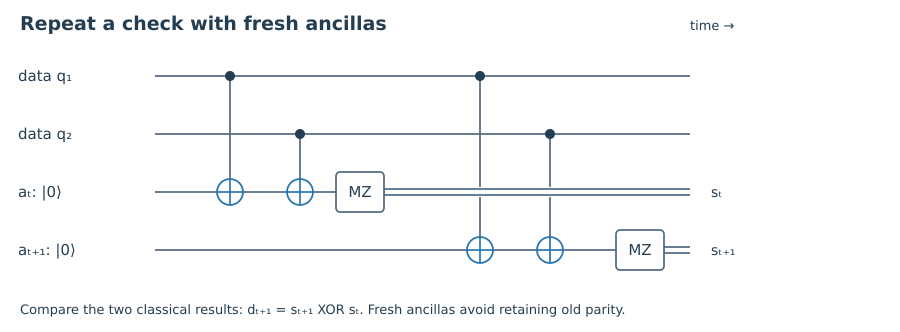

1. Quick check §
What ancilla state is used for the Z-parity circuit?
Hint 1
Track XOR into a target register.
Worked solution
Initialize |0⟩, use the data as controls and the ancilla as target, and measure the ancilla in Z.
Chapter 06 · Draft lesson
How can a circuit record parity without reading the logical state, and how should we interpret its record?
Starting point: Chapters 1–5; CNOT and projective measurement.
Anchor example: Measuring Z₁Z₂ with one ancilla and decoding repeated parity records.
Method: Derive the measurement operators of a parity circuit, then separate inference from correction.
Watch for: A syndrome is evidence about an error class, not a guaranteed record of a unique physical event.
This lesson includes explanations, worked examples, and problems with solutions. Advanced results whose proofs are outside the chapter are identified explicitly.
So far we have treated a stabilizer measurement as an available operation. A laboratory, however, has gates, ancillas, and detectors. We need to show how those ingredients implement the gentle question “do these qubits agree?” rather than the destructive question “what are their individual values?”
Prepare an ancilla a in |0⟩. Apply CNOT with data qubit 1 as control and a as target, followed by CNOT with data qubit 2 as control and the same target. Finally measure a in the computational basis. On a basis state, the circuit acts as
\[|b_1b_2\rangle|0\rangle_a\longmapsto|b_1b_2\rangle|b_1\oplus b_2\rangle_a.\]Linearity tells us what happens to a superposition. Both |00⟩ and |11⟩ leave the ancilla in |0⟩; both |01⟩ and |10⟩ leave it in |1⟩. The measurement operators on the data are therefore \(P_0=(I+Z_1Z_2)/2\) and \(P_1=(I-Z_1Z_2)/2\). For outcome s, the unnormalized state is PₛρPₛ and its probability is tr(Pₛρ). Coherence within each parity subspace survives.
Apply this to a Bell state (|00⟩+|11⟩)/√2. It yields ancilla outcome zero with certainty and leaves the Bell state unchanged. Measuring each data bit and computing their XOR afterwards would give the same parity statistics but a different state update: it destroys the coherence between 00 and 11. The instrument, not just its list of outcome probabilities, determines whether error correction works.
An X-type check can be measured by conjugating its data qubits with Hadamards before and after the analogous Z-parity circuit. Alternatively, prepare an ancilla in |+⟩, use it as control for CNOTs into the data, and measure the ancilla in X. The ideal circuits measure the desired observable; their different error-propagation behavior will matter in Chapter 8.


Worked check 6.1. What is the post-measurement state if Z₁Z₂ is measured on |++⟩ and the result is even?
The even projector keeps |00⟩ and |11⟩, whose combined probability is 1/2. After normalization the data are (|00⟩+|11⟩)/√2. The measurement can create conditional entanglement because it resolves a joint parity without resolving the individual values.
Once a syndrome is available, a decoder chooses a recovery. A simple decoder picks a Pauli with the smallest weight consistent with the syndrome. Under independent, equally likely bit flips with p<1/2, lower-weight individual patterns are more probable because a weight-w pattern has probability pʷ(1−p)ⁿ⁻ʷ. This explains the majority rule for the repetition code.
But decoding has a subtle objective. Two same-syndrome errors differing by a stabilizer have the same action on logical information. For a candidate representative Eₛ and a logical class L, the posterior weight of that class is proportional to the sum of probabilities of all errors in EₛLS, where S ranges over stabilizers. A maximum-likelihood logical decoder chooses the most probable class, not necessarily the most probable individual error.
For the repetition code under bit flips, syndrome 10 could mean X₁ or X₂X₃. Their probabilities are p(1−p)² and p²(1−p). The ratio is (1−p)/p, so the single flip is preferred only when p<1/2. At p=0.8, the two-flip explanation is four times as likely. The decoder’s assumptions are part of the protocol; they cannot be hidden in the word “correction.”
Applying a Pauli physically is not always necessary. We can record it in a Pauli frame and update how subsequent gates and measurements are interpreted. This avoids introducing a noisy correction gate just to remove an error whose effect we already understand. The bookkeeping must still be updated correctly, especially when later operations do not preserve the Pauli group.
Worked check 6.2. At p=0.1, compare the probabilities of X₁ and X₂X₃ for syndrome 10.
They are 0.1(0.9)²=0.081 and (0.1)²(0.9)=0.009. Conditional on that syndrome within the bit-flip model, the single flip has probability 0.9 and the pair has probability 0.1. The decoder cannot know the actual history with certainty.
A reported syndrome can be wrong because the data changed or because the ancilla measurement failed. One round alone cannot reliably separate those possibilities. Repeating checks adds a time dimension. Let sₜ be a reported syndrome bit at round t, and define a detection event dₜ=sₜ⊕sₜ₋₁, with an appropriate known initial value or boundary model.
If a data error occurs between rounds and persists, it changes subsequent true syndrome values. If only one reported measurement is flipped, the record changes and then changes back, producing two adjacent detection events in time. For example, reported values 0,0,1,0,0 have differences 0,1,1,0 between successive rounds. A persistent data change 0,0,1,1,1 gives 0,1,0,0. These patterns are evidence, not an infallible classification: combinations of faults can imitate them.
A decoder for repeated noisy measurements must use a model of both space and time. Final data readout and the first-round boundary also supply information; simply repeating a check a fixed number of times and taking a vote is not a universal decoding solution. Surface-code decoders turn these records into a geometric inference problem, which we examine next.
At this stage, we have derived ideal syndrome extraction and shown why noisy records need richer inference. We have not yet certified the extraction circuit itself as fault tolerant. An ancilla fault can spread through several CNOTs, and a perfect classical decoder cannot undo damage beyond the code’s ability to distinguish it.

Worked check 6.3. If a single measurement record s₃ is flipped while all true syndromes are zero, which adjacent detection events change?
The differences involving s₃ are d₃=s₃⊕s₂ and d₄=s₄⊕s₃. Both become one. At the start or end of a finite record, the boundary must be handled separately rather than assuming an unobserved adjacent round.
These exercises draw on the whole chapter. Attempt each question before opening a hint, explain your reasoning, then compare it with the worked solution.
What ancilla state is used for the Z-parity circuit?
Track XOR into a target register.
Initialize |0⟩, use the data as controls and the ancilla as target, and measure the ancilla in Z.
What do even and odd mean for Z₁Z₂?
Multiply the Z eigenvalues.
Even parity corresponds to eigenvalue +1 and syndrome 0; odd parity to eigenvalue −1 and syndrome 1.
Compute the odd-parity branch of a Z₁Z₂ measurement on |++⟩.
Project onto |01⟩ and |10⟩.
The branch probability is 1/2 and the normalized state is (|01⟩+|10⟩)/√2.
Why are P₀ and P₁ a complete projective measurement?
Use (Z₁Z₂)²=I.
Each is Hermitian and idempotent, P₀P₁=0, and P₀+P₁=I. Their outcome probabilities therefore sum to one.
At p=0.8, compare X₁ and X₂X₃ under independent bit flips.
Use their exact pattern probabilities.
The probabilities are 0.032 and 0.128 respectively. The two-flip pattern is four times more likely, reversing the usual low-noise decoding choice.
Find detection events for record 0,1,1,0.
XOR successive values.
The successive differences are 1,0,1. A boundary convention would add any event relative to a known initial syndrome.
A Pauli frame contains X before a Z measurement. How should the outcome be interpreted?
X anticommutes with Z.
Invert the reported Z eigenvalue or measurement bit relative to the frame-free logical interpretation. No physical X application is required for this readout.
Is recording all individual bits and computing parity equivalent to measuring parity?
Compare state updates on a Bell state.
No. It yields the same parity result on that state but leaks the individual logical alternative and destroys coherence. A parity-only instrument preserves the even superposition.
Does a minimum-weight decoder always maximize logical success?
Sum probabilities over stabilizer-equivalent errors.
No. Noise bias and the number of equivalent patterns can favor another logical class. Minimum weight is a model-dependent approximation.
Propose a decoder-validation experiment for repeated noisy checks.
Separate data faults from readout faults in the model.
Generate records with known independent data and measurement fault rates, include initial and final boundary information, decode, and compare the residual logical action with the known injected history. Report logical failure rather than merely a zero final syndrome.